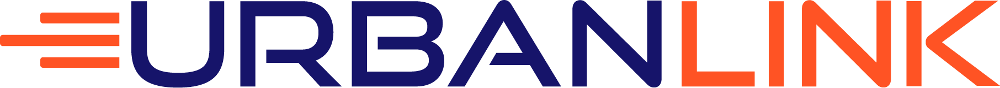

Empresa demonstrativa · Logística inteligente
RotaNexa
Conceito de empresa de tecnologia aplicada ao planejamento de trajetos, distribuição urbana e redução de viagens desnecessárias.

Conheça exemplos de marcas que podem apoiar a inovação em logística urbana e mobilidade sustentável.
Espaço reservado para um parceiro de destaque da plataforma.
Conceito de empresa de tecnologia aplicada ao planejamento de trajetos, distribuição urbana e redução de viagens desnecessárias.
Três conceitos de empresas que representam diferentes frentes da logística urbana.
Projeto fictício de entregas com foco em eficiência energética e redução da pegada ambiental.
Conceito de análise de fluxos urbanos e indicadores para planejamento de operações logísticas.
Empresa-exemplo de serviços digitais que conectam equipes, veículos e centros de distribuição.